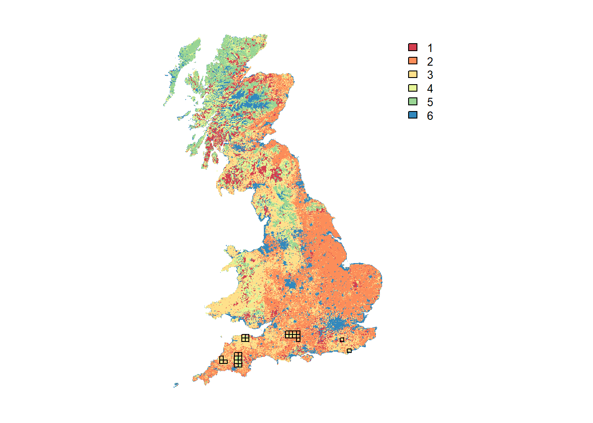
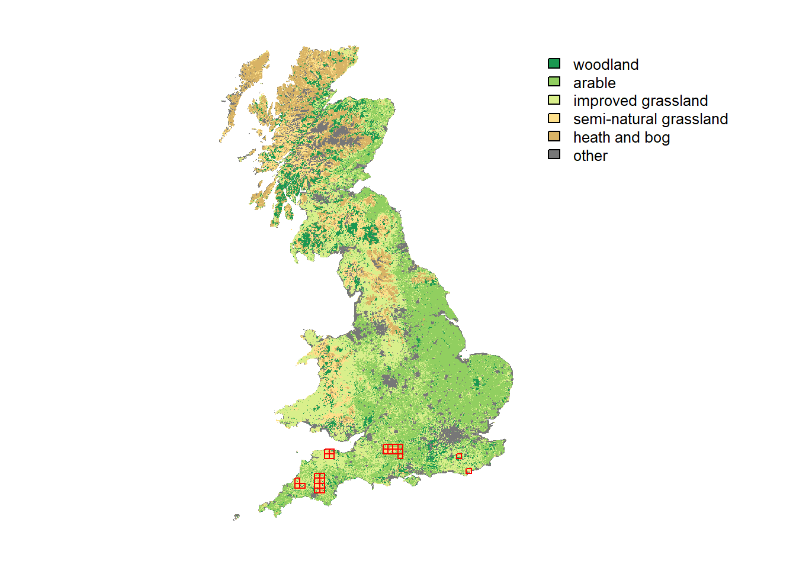
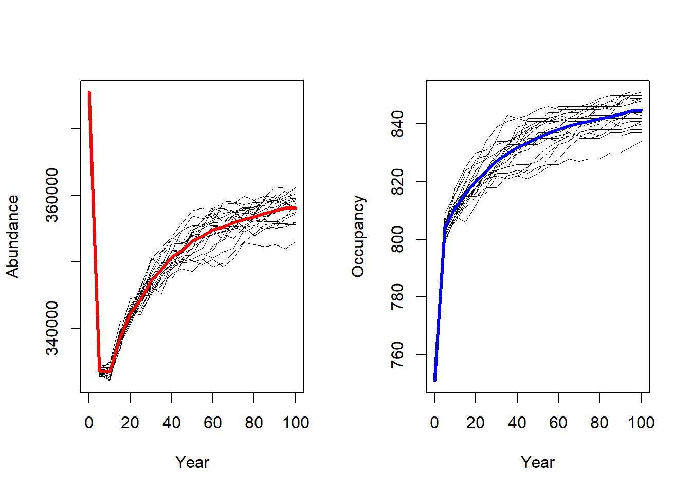
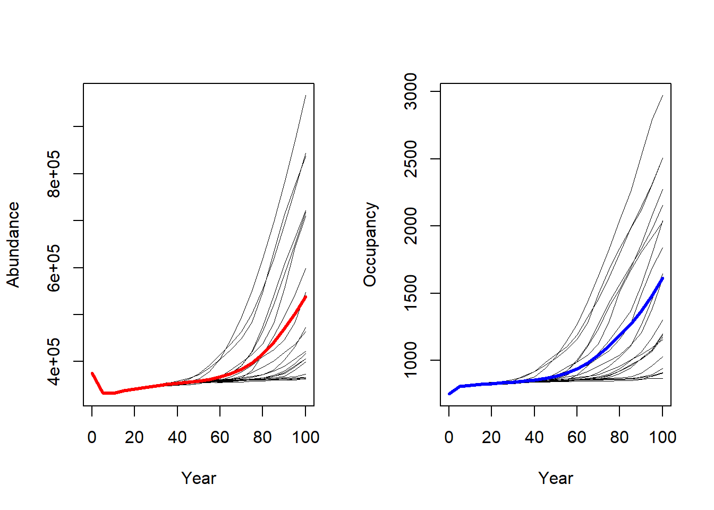
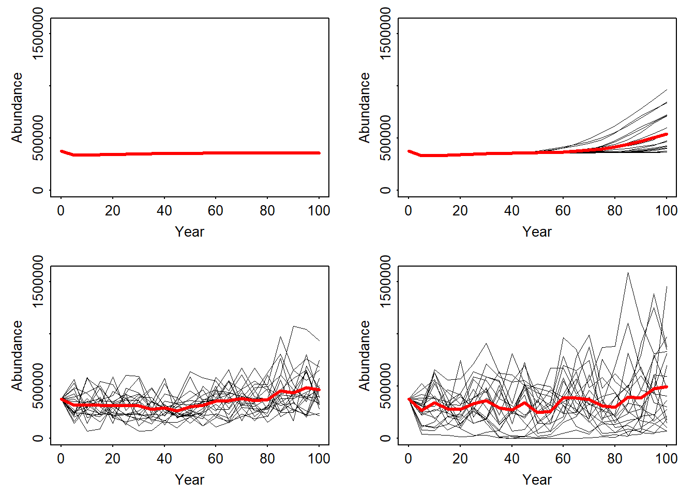
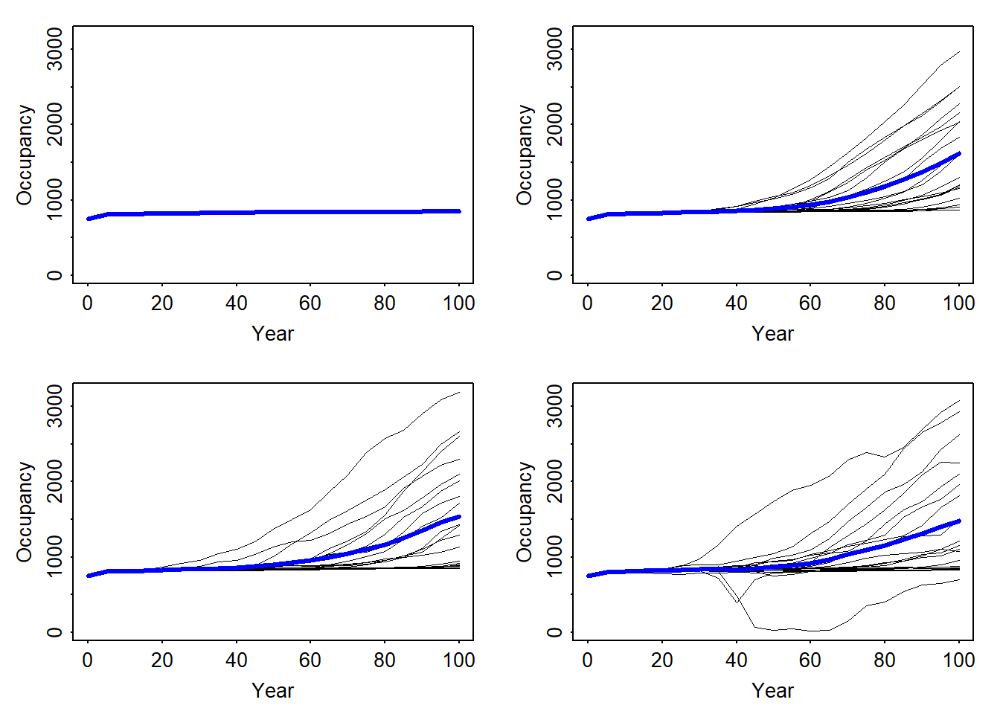
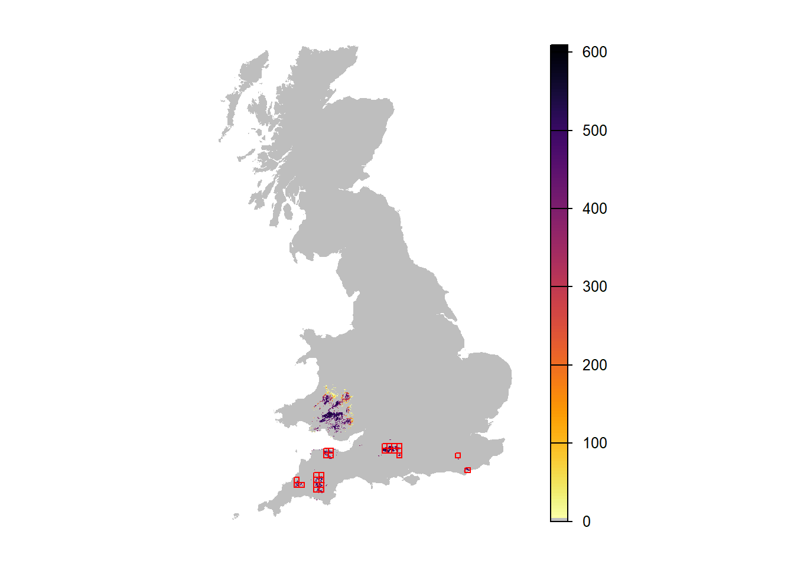

Tutorial 1: Range expansion, long-distance dispersal and environmental stochasticity
This is an example of how RangeShiftR can be used at
national scale for modelling species range dynamics (Bocedi et al. 2014). We model a hypothetical
grassland species distributed initially in the South-West of England,
and assume that from the start of the simulation the species is free to
expand its range. This could be the case for alien species that
naturally start to expand after having gone through an establishment
phase, an alien or native species that have been released from natural
enemies or competitors, or a species for which a previously prohibiting
climate has become suitable.
We assume that we have data about the current species distribution and use it as a starting point. The objective is to investigate how different assumptions about the dispersal ability of the species and about temporal environmental stochasticity can affect the modelled range expansion. We start with the basic setting of a single dispersal kernel and no environmental stochasticity.
1 Simulating range expansions
1.1 Create an RS directory
The directory in which we run RangeShiftR needs to have
a certain folder structure. It should contain three sub-folders named
‘Inputs’, ‘Outputs’ and ‘Output_Maps’. We can create them from R:
library(RangeShiftR)
library(raster)
library(RColorBrewer)
library(rasterVis)
library(latticeExtra)
library(viridis)
library(grid)
library(gridExtra)
# relative path from working directory:
dirpath = "Tutorial_01/"
dir.create(paste0(dirpath,"Inputs"), showWarnings = TRUE)
dir.create(paste0(dirpath,"Outputs"), showWarnings = TRUE)
dir.create(paste0(dirpath,"Output_Maps"), showWarnings = TRUE)Copy the input files provided for exercise 1 into the ‘Inputs’ folder. The files can be downloaded here.
1.2 Landscape parameters
We use a land-cover map of Great Britain at 1km resolution. Six dominant aggregated habitat types were derived from LandCover Map 2007 (Morton et al. 2011). The map, UKmap_1km.txt, is an ASCII raster in the standard text format, where each cell holds the code of its dominant habitat type. The habitat codes have to be given as sequential integer numbers, starting from one:
- 1 = woodland (broadleaved and conifer)
- 2 = arable
- 3 = improved grassland
- 4 = semi-natural grassland (acid, neutral and calcareous grassland)
- 5 = heath and bog
- 6 = other (urban, water & coastal habitats)
Furthermore, we are provided with a map that defines the (initial) species distribution, named Species_Distribution_10km.txt. It is given at a coarser resolution of 10km.
Let’s plot the landscape map and overlay it with the initial species distribution:
UKmap <- raster(paste0(dirpath, "Inputs/UKmap_1km.txt"))
SpDist <- raster(paste0(dirpath, "Inputs/Species_Distribution_10km.txt"))
values(SpDist)[values(SpDist) < 1] <- NA
# plot land cover map and highlight cells with initial species distribution - option 1:
plot(UKmap, col=brewer.pal(n = 6, name = "Spectral"), axes=F)
plot(rasterToPolygons(SpDist, dissolve=F), add=T)
For prettier mapping with a legend specifying the different land cover categories and a custom colour palette, we need a little workaround:
# plot land cover map and highlight cells with initial species distribution - option 2 with categorical legend:
UKmap.f <- as.factor(UKmap)
# add the land cover classes to the raster attribute table (RAT)
rat <- levels(UKmap.f)[[1]]
rat[["landcover"]] <- c("woodland", "arable", "improved grassland", "semi-natural grassland", "heath and bog", "other")
levels(UKmap.f) <- rat
custom.pal <- c("#1A9850", "#91CF60", "#D9EF8B", "#FEE08B", "#D8B365", "#777777")
levelplot(UKmap.f, margin=F, scales=list(draw=FALSE), col.regions=custom.pal) +
layer(sp.polygons(rasterToPolygons(SpDist, dissolve=F), fill=NA, col='red'))
In order to use the habitat and distribution maps in
RangeShiftR, we need to set up a landscape module. It takes
the path to the map files along with some other parameters, like their
resolutions (given in meters) and the number of habitats. Additionally,
we have to specify the demographic density dependence for our target
species in each habitat type, which is given in individuals per hectare
and provided to the argument K_or_DensDep. Care should be
taken, since this value is used differently in the population models for
overlapping and non-overlapping generations. In this example, we use a
simple model with non-overlapping generations (see below), so that the
given values are used as limiting carrying capacities K of each
habitat type. We assume that the species can reproduce only in
semi-natural grassland, which has the code 4. Therefore, we set
the carrying capacity for this habitat equal to 5 inds/ha and
all others to 0, by defining a vector named carrycap
that contains these numbers in the order of increasing habitat codes and
that we give to the argument K_or_DensDep of the imported
landscape module:
# carrying capacitíes and landscape parameter object
carrycap <- c(0, 0, 0, 5, 0, 0)
land <- ImportedLandscape(LandscapeFile = "UKmap_1km.txt",
Resolution = 1000,
Nhabitats = 6,
K_or_DensDep = carrycap,
SpDistFile = "Species_Distribution_10km.txt",
SpDistResolution = 10000)1.3 Species parameters
Next, we specify the species parameters for the demography and dispersal modules. In this first example, we choose the simplest model options for both: the population dynamics are described by a female-only model with non-overlapping generations. This has one compulsory argument, the maximum growth rate Rmax, that we set to 1.5.
demo <- Demography(Rmax = 1.5)The dispersal module comprises three sub-modules representing the three phases of dispersal: Emigration, Transport and Settlement. We assume a constant emigration probability of 0.1. The transfer phase is modelled with a dispersal kernel, whose mean distance is set to 2,000m. For the Settlement sub-module, we use the default options, which assume that an individual will die if it arrives in an unsuitable cell and settle if it’s suitable.
disp <- Dispersal(Emigration = Emigration(EmigProb = 0.1),
Transfer = DispersalKernel(Distances = 2000),
Settlement = Settlement() )
# alternative notation:
# disp <- Dispersal() + Emigration(EmigProb = 0.1) + DispersalKernel(Distances = 2000) + Settlement()1.4 Initialisation parameters
In order to control the initial distribution of individuals in the landscape at year 0, we set initialisation rules. We want to initialise all habitat cells that are located inside the 10km x 10km presence cells indicated by the loaded species distribution map; and we want each of those cells to be initialised at its respective carrying capacity. These options are encoded in numeric arguments; for a list of possible settings see the documentation:
?Initialise
init <- Initialise(InitType = 1, # = initialisation from a loaded species distribution map
SpType = 0, # = all suitable cells within all distribution presence cells
InitDens = 0) # = at carrying capacity1.5 Simulation parameters
Lastly, we set some basic simulation parameters, i.e. the simulation number, number of replicates and number of years to be simulated. Furthermore, we specify what file output will be generated. In this example, we choose to output the population, occupancy and range data for every 5 years.
sim_0 <- Simulation(Simulation = 0,
Replicates = 20,
Years = 100,
OutIntPop = 5,
OutIntOcc = 5,
OutIntRange = 5)1.6 Parameter master
All settings we have made so far are contained in their respective module objects. They have to be combined to a parameter master object, which validates all parameter settings and is needed to run the simulation.
s <- RSsim(land = land, demog = demo, dispersal = disp, simul = sim_0, init = init)
# alternative notation:
# s <- RSsim() + land + demo + disp + sim_0 + initBefore we run the simulation, let’s get an overview of the settings we have made by simply typing:
s## Batch # 1
##
## Simulation # 0
## -----------------
## Replicates = 20
## Years = 100
## Absorbing = FALSE
## File Outputs:
## Range, every 5 years
## Occupancy, every 5 years
## Populations, every 5 years, starting year 0
##
## Landscape imported from file:
## UKmap_1km.txt
## with 6 unique integer habitat code(s)
## K or 1/b : 0 0 0 5 0 0 [inds per ha].
## Resolution : 1000
## Initial Species Distribution imported from file:
## Species_Distribution_10km.txt
## Resolution : 10000
##
## Demography:
## Unstructured population:
## Rmax : 1.5
## bc : 1
## Reproduction Type : 0 (female only)
##
## Dispersal:
## Emigration:
## Emigration probabilities:
## [,1]
## [1,] 0.1
##
## Transfer:
## Dispersal Kernel
## Dispersal kernel traits:
## [,1]
## [1,] 2000
## Constant mortality prob = 0
##
## Settlement:
## Settlement conditions:
## [,1]
## [1,] 0
## FindMate = FALSE
##
## Initialisation:
## InitType = 1 : Initialisation from loaded species distribution map
## all presence cells/patches.
## InitDens = 0 : At K_or_DensDepAt any stage, you can check for parameter validity of any module or the master.
validateRSparams(s)## [1] TRUEIf it returns TRUE, the parameters are valid. Also,
before actually running the simulation, the RSsim()
function (see next section) will always check the validity of all
settings and give error messages in case something doesn’t match up.
1.7 Run the simulation
Once all parameters are set and a parameter master object has been defined, we can run the simulations in the specified RS directory.
RunRS(s, dirpath)1.8 Plot results
For convenience and for compliance with the RangeShifter Windows GUI,
the RangeShiftR package contains a few plotting functions
to inspect the population time series of the replicate simulations.
# read 'range' output into a data frame
range_df <- readRange(s, dirpath)
# plot trajectories of all individual runs and overlay with mean:
par(mfrow=c(1,2))
plotAbundance(range_df)
plotOccupancy(range_df)
# or plot mean and standard deviation:
par(mfrow=c(1,2))
plotAbundance(range_df, rep=F, sd=T)
plotOccupancy(range_df, rep=F, sd=T)
The population output file contains the local abundances for all populated cells in the recorded years for all replicates. We can convert this data frame into raster maps and plot the spatial abundance distribution.
# read population output file into a data frame
pop_df <- readPop(s, dirpath)
# Not all years have the same number of cells, since only cells that had ever established a population are recorded.
# For later stacking, we need a common extent. This is a quick & dirty solution:
ext <- c(min(pop_df$x)-500,max(pop_df$x)+500,min(pop_df$y)-500,max(pop_df$y)+500)
# Make stack of different raster layers for each year and for only one repetition (Rep==0):
pop_wide_rep0 <- reshape(subset(pop_df,Rep==0)[,c('Year','x','y','NInd')], timevar='Year', v.names=c('NInd'), idvar=c('x','y'), direction='wide')
r_years_rep0 <- rasterFromXYZ(pop_wide_rep0)
# Overlay with UK mask
r_years_rep0 <- extend(r_years_rep0, UKmap)
values(r_years_rep0)[is.na(values(r_years_rep0))] <- 0
r_years_rep0 <- mask(r_years_rep0, UKmap)
# Map abundance
levelplot(r_years_rep0[['NInd.90']], margin=F, scales=list(draw=FALSE), at=c(0,seq(1,max(pop_df$NInd), length=20)),
col.regions=c('grey',rev(inferno(20)))) +
layer(sp.polygons(rasterToPolygons(SpDist, dissolve=F), fill=NA, col='red'))
We can make similar maps showing the average abundance over all replicate runs. For convenience, we define a small function for this, which we can re-use later. When calling this function, we can choose whether all replicates should be averaged (the default) or whether a specific replicate should be extracted. Also, we can optionally overlay a mask, e.g. the UK map.
stack_pop <- function(pop_df, ext, rep=NULL, mask=NULL){
# This function takes the population data frame output from RangeShiftR and turns it into a raster stack of abundance maps.
# If the ID of the Replicate ("rep") is not provided, it will return the mean abundance over all replicates.
if (!is.null(rep)){
pop_wide <- reshape(subset(pop_df,Rep==rep)[,c('Year','x','y','NInd')], timevar='Year', v.names=c('NInd'), idvar=c('x','y'), direction='wide')
r_years <- rasterFromXYZ(pop_wide)
if (!is.null(mask)){
r_years <- extend(r_years, mask)
values(r_years)[is.na(values(r_years))] <- 0
r_years <- mask(r_years, mask)
}
} else {
pop_wide <- lapply(unique(pop_df$Year),FUN=function(year){reshape(subset(pop_df,Year==year)[,c('Rep','x','y','NInd')], timevar='Rep', v.names=c('NInd'), idvar=c('x','y'), direction='wide')})
r_years <- stack(sapply(pop_wide, FUN=function(i){mean(extend(rasterFromXYZ(i),ext))}))
names(r_years) <- paste0('mean.NInd.',unique(pop_df$Year))
if (!is.null(mask)){
r_years <- extend(r_years, mask)
values(r_years)[is.na(values(r_years))] <- 0
r_years <- mask(r_years, mask)
}
}
return(r_years)
}Extracting the maps is much easier now:
# Extract maps of single replicate run:
r_years_rep0 <- stack_pop(pop_df, ext, rep=0, mask=UKmap)
names(r_years_rep0)## [1] "NInd.0" "NInd.5" "NInd.10" "NInd.15" "NInd.20" "NInd.25"
## [7] "NInd.30" "NInd.35" "NInd.40" "NInd.45" "NInd.50" "NInd.55"
## [13] "NInd.60" "NInd.65" "NInd.70" "NInd.75" "NInd.80" "NInd.85"
## [19] "NInd.90" "NInd.95" "NInd.100"# Extract maps with averaged abundances over all replicates:
r_years <- stack_pop(pop_df, ext, mask=UKmap)
names(r_years)## [1] "mean.NInd.0" "mean.NInd.5" "mean.NInd.10" "mean.NInd.15"
## [5] "mean.NInd.20" "mean.NInd.25" "mean.NInd.30" "mean.NInd.35"
## [9] "mean.NInd.40" "mean.NInd.45" "mean.NInd.50" "mean.NInd.55"
## [13] "mean.NInd.60" "mean.NInd.65" "mean.NInd.70" "mean.NInd.75"
## [17] "mean.NInd.80" "mean.NInd.85" "mean.NInd.90" "mean.NInd.95"
## [21] "mean.NInd.100"# Map abundance of single replicate run in year 90:
levelplot(r_years_rep0[['NInd.90']], margin=F, scales=list(draw=FALSE), at=c(0,seq(1,max(pop_df$NInd),length=20)), col.regions=c('grey',rev(inferno(20)))) +
layer(sp.polygons(rasterToPolygons(SpDist, dissolve=F), fill=NA, col='red'))# Map mean abundance in year 90:
levelplot(r_years[['mean.NInd.90']], margin=F, scales=list(draw=FALSE), at=c(0,seq(1,max(pop_df$NInd),length=20)), col.regions=c('grey',rev(inferno(20)))) +
layer(sp.polygons(rasterToPolygons(SpDist, dissolve=F), fill=NA, col='red'))2 Change simulations
We can easily change certain aspects of the simulations by changing the various modules. Here, we explore the different simulations as shown in Fig. 2 of Bocedi et al. (2014). Firstly, we add long-distance dispersal. Secondly, we add environmental stochasticity without and with temporal autocorrelation.
2.1 Add rare long-distance dispersal
To explore the effect of rare long-distance dispersal events on the range expansion, we only need to change the dispersal module. More specifically, we define a new transfer sub-module with the option DoubleKernel enabled, to use the double negative exponential kernel (Mixed kernel). This means that in addition to the standard dispersal kernel, an individual has a certain probability of dispersing with a second - a long-distance - dispersal kernel.
# in the dispersal kernel sub-module, the distance parameters are now given as
# Distances = c(MeanDistance-I, MeanDistance-II, probability of dispersing with Kernel-I)
trans_long <- DispersalKernel(DoubleKernel = T, Distances = matrix(c(2000, 10000, 0.99), ncol = 3))
disp_long <- Dispersal(Emigration = Emigration(EmigProb = 0.1),
Transfer = trans_long,
Settlement = Settlement() )Moreover we change the simulation number to 1 in the corresponding parameter object, in order to avoid overwriting the previous output.
sim_1 <- Simulation(Simulation = 1,
Replicates = 20,
Years = 100,
OutIntPop = 5,
OutIntOcc = 5,
OutIntRange = 5)Finally, the new modules are added to the old parameter master to define a new one, s_long.
s_long <- s + disp_long + sim_1With this, run the new simulation:
RunRS(s_long, dirpath)We can now compare the result plots. The number of occupied cells as well as the total abundance is much higher in this scenario.
# Get range results
range_df_long <- readRange(s_long, dirpath)
# Plot total abundance and number of occupied cells:
par(mfrow=c(1,2))
plotAbundance(range_df_long)
plotOccupancy(range_df_long)
# Map mean abundance:
pop_df_long <- readPop(s_long, dirpath)
ext_long <- c(min(pop_df_long$x)-500,max(pop_df_long$x)+500,min(pop_df_long$y)-500,max(pop_df_long$y)+500)
r_years_long <- stack_pop(pop_df_long, ext_long, mask=UKmap)
levelplot(r_years_long[['mean.NInd.90']], margin=F, scales=list(draw=FALSE), at=c(0,seq(1,max(pop_df_long$NInd),length=20)), col.regions=c('grey',rev(inferno(20)))) +
layer(sp.polygons(rasterToPolygons(SpDist, dissolve=F), fill=NA, col='red'))When comparing the maps of mean abundance between the first and second scenario, these look quite similar. One reason might be that successful long-distance dispersal is highly stochastic and, thus, high occupancy only occurs for a few but not for all runs. So, let’s try and map only the replicate run with the highest occupancy.
# Which replicate had highest occupancy?
head(subset(range_df_long,Year==95)[order(subset(range_df_long,Year==95)$NOccupCells,decreasing=T),])## Rep Year RepSeason NInds NOccupCells Occup.Suit min_X max_X min_Y max_Y
## 419 19 95 0 949724 2841 0.1195460 211000 569000 45000 325000
## 167 7 95 0 895927 2826 0.1189140 211000 569000 45000 295000
## 398 18 95 0 929092 2720 0.1144540 211000 569000 58000 282000
## 335 15 95 0 683409 2665 0.1121400 211000 569000 37000 312000
## 377 17 95 0 759546 2208 0.0929097 185000 569000 45000 279000
## 125 5 95 0 693928 2198 0.0924890 211000 569000 45000 277000rep_x = subset(range_df_long,Year==95)$Rep[which.max(subset(range_df_long,Year==95)$NOccupCells)]
r_years_long_1 <- stack_pop(pop_df_long, ext_long, rep=rep_x, mask=UKmap)
names(r_years_long_1)## [1] "NInd.0" "NInd.5" "NInd.10" "NInd.15" "NInd.20" "NInd.25"
## [7] "NInd.30" "NInd.35" "NInd.40" "NInd.45" "NInd.50" "NInd.55"
## [13] "NInd.60" "NInd.65" "NInd.70" "NInd.75" "NInd.80" "NInd.85"
## [19] "NInd.90" "NInd.95" "NInd.100"levelplot(r_years_long_1[['NInd.90']], margin=F, scales=list(draw=FALSE), at=c(0,seq(1,max(pop_df_long$NInd),length=20)), col.regions=c('grey',rev(inferno(20)))) +
layer(sp.polygons(rasterToPolygons(SpDist, dissolve=F), fill=NA, col='red'))We can see that there is a chance for the population to spread to the north and establish in a broader range. However, only some replicates show this.
2.2 Add temporal environmental stochasticity
Lastly, we incorporate temporal environmental stochasticity, which is recognized to be fundamental for both ecological and evolutionary processes and is expected to increase in frequency and become more auto-correlated with climate change.
The options for the environmental stochasticity are set in the Simulation parameters object. For this example we use global (referring to the spatial extent) stochasticity in growth rate. We explore two types of stochasticity: temporally uncorrelated (white noise) and positively correlated (red noise), by setting the autocorrelation coefficient ac:
# for white noise
sim_2 <- Simulation(Simulation = 2,
Replicates = 20,
Years = 100,
EnvStoch = 1, # global environmental stochasticity
EnvStochType = 0, # in growth rate:
std = 0.25, # magnitude of stochastic fluctuations
ac = 0.0, # temporal autocorrelation
minR = 0.5, # minimum growth rate
maxR = 2.5, # maximum growth rate
OutIntPop = 5,
OutIntOcc = 5,
OutIntRange = 5)
s_envstoch_white <- s_long + sim_2 # for red noise
sim_3 <- Simulation(Simulation = 3,
Replicates = 20,
Years = 100,
EnvStoch = 1, # global environmental stochasticity
EnvStochType = 0, # in growth rate:
std = 0.25, # magnitude of stochastic fluctuations
ac = 0.7, # temporal autocorrelation
minR = 0.5, # minimum growth rate
maxR = 2.5, # maximum growth rate
OutIntPop = 5,
OutIntOcc = 5,
OutIntRange = 5)
s_envstoch_red <- s_long + sim_3RunRS(s_envstoch_white, dirpath)
RunRS(s_envstoch_red, dirpath)Comparing the results of all four simulation runs:
# Get results:
range_df_envstoch_white <- readRange(s_envstoch_white, dirpath)
range_df_envstoch_red <- readRange(s_envstoch_red, dirpath)
par(mfrow=c(2,2),mar=c(3,3,1,1)+.1, tcl=-.1, mgp=c(1.6,.3,0))
# Get common y-range of all 4 simulations
ylim <- c(min(min(range_df$NInds),min(range_df_long$NInds), min(range_df_envstoch_white$NInds), min(range_df_envstoch_red$NInds)), max(max(range_df$NInds),max(range_df_long$NInds), max(range_df_envstoch_white$NInds), max(range_df_envstoch_red$NInds)))
plotAbundance(range_df, ylim = ylim)
plotAbundance(range_df_long, ylim = ylim)
plotAbundance(range_df_envstoch_white, ylim = ylim)
plotAbundance(range_df_envstoch_red, ylim = ylim)
par(mfrow=c(2,2),mar=c(3,3,1,1)+.1, tcl=-.1, mgp=c(1.6,.3,0))
ylim <- c(min(min(range_df$NOccupCells),min(range_df_long$NOccupCells), min(range_df_envstoch_white$NOccupCells), min(range_df_envstoch_red$NOccupCells)), max(max(range_df$NOccupCells),max(range_df_long$NOccupCells), max(range_df_envstoch_white$NOccupCells), max(range_df_envstoch_red$NOccupCells)))
plotOccupancy(range_df, ylim = ylim)
plotOccupancy(range_df_long, ylim = ylim)
plotOccupancy(range_df_envstoch_white, ylim = ylim)
plotOccupancy(range_df_envstoch_red, ylim = ylim)
# Map mean abundance scenario 3
pop_df_envstoch_white <- readPop(s_envstoch_white, dirpath)
ext_envstoch_white <- c(min(pop_df_envstoch_white$x)-500,max(pop_df_envstoch_white$x)+500,min(pop_df_envstoch_white$y)-500,max(pop_df_envstoch_white$y)+500)
r_years_envstoch_white <- stack_pop(pop_df_envstoch_white, ext_envstoch_white, mask=UKmap)
levelplot(r_years_envstoch_white[['mean.NInd.90']], margin=F, scales=list(draw=FALSE), at=c(0,seq(1,max(pop_df_envstoch_white$NInd),length=20)), col.regions=c('grey',rev(inferno(20)))) +
layer(sp.polygons(rasterToPolygons(SpDist, dissolve=F), fill=NA, col='red'))# Which replicate had highest occupancy?
rep_x = subset(range_df_envstoch_white,Year==95)$Rep[which.max(subset(range_df_envstoch_white,Year==95)$NOccupCells)]
r_years_envstoch_white_1 <- stack_pop(pop_df_envstoch_white, ext_envstoch_white, rep=rep_x, mask=UKmap)
levelplot(r_years_envstoch_white_1[['NInd.90']], margin=F, scales=list(draw=FALSE), at=c(0,seq(1,max(pop_df_envstoch_white$NInd),length=20)), col.regions=c('grey',rev(inferno(20)))) +
layer(sp.polygons(rasterToPolygons(SpDist, dissolve=F), fill=NA, col='red'))
# Map mean abundance scenario 4
pop_df_envstoch_red <- readPop(s_envstoch_red, dirpath)
ext_envstoch_red <- c(min(pop_df_envstoch_red$x)-500,max(pop_df_envstoch_red$x)+500,min(pop_df_envstoch_red$y)-500,max(pop_df_envstoch_red$y)+500)
r_years_envstoch_red <- stack_pop(pop_df_envstoch_red, ext_envstoch_red, mask=UKmap)
levelplot(r_years_envstoch_red[['mean.NInd.90']], margin=F, scales=list(draw=FALSE), at=c(0,seq(1,max(pop_df_envstoch_red$NInd),length=20)), col.regions=c('grey',rev(inferno(20)))) +
layer(sp.polygons(rasterToPolygons(SpDist, dissolve=F), fill=NA, col='red'))
# Which replicate had highest occupancy?
rep_x = subset(range_df_envstoch_red,Year==95)$Rep[which.max(subset(range_df_envstoch_red,Year==95)$NOccupCells)]
r_years_envstoch_red_1 <- stack_pop(pop_df_envstoch_red, ext_envstoch_red, rep=rep_x, mask=UKmap)
levelplot(r_years_envstoch_red_1[['NInd.90']], margin=F, scales=list(draw=FALSE), at=c(0,seq(1,max(pop_df_envstoch_red$NInd),length=20)), col.regions=c('grey',rev(inferno(20)))) +
layer(sp.polygons(rasterToPolygons(SpDist, dissolve=F), fill=NA, col='red'))